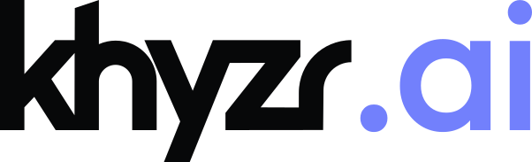
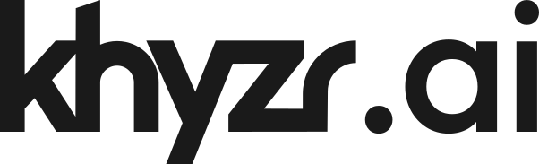
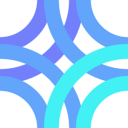
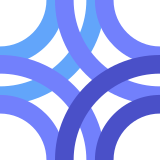

Brand · Appendix
Logo files
Every logo file behind the marks. Which file for which job, how a file is named, what each pack holds, and the smallest size of every mark.
Which file for which job.
Find the job at the left. Take the file at the right, in the format your tool wants.
| The job | The file |
|---|---|
| A document, a slide, or a page on white | khyzr-wordmark_on-light |
| A dark slide, a dark section, a footer | khyzr-wordmark_on-dark |
| A cover, a title slide, a letterhead, or a sign, with room | khyzr-lockup-h_on-light or khyzr-lockup-h_on-dark |
| A square or tall format: a centered cover, a social tile | khyzr-lockup-v_on-light or khyzr-lockup-v_on-dark |
| A tight square, 24px and up | khyzr-symbol_on-light or khyzr-symbol_on-dark |
| An avatar, an app tile, anything under 24px | khyzr-symbol_on-dark_badge |
| The same, on a black or near-black platform | khyzr-symbol_on-light_badge |
| A browser tab | khyzr-favicon.svg |
| Single-color print, engraving, embossing, a light background pattern | khyzr-wordmark_black |
| Reversed print, foil, a dark background pattern | khyzr-wordmark_white |
| Four-color print: a brochure, a card, a sign | The mark's PDF or EPS, with _cmyk at the end of its name |
| A contract, packaging, a first prominent use | The same file, with _reg in its name |
The format for each tool.
Every mark comes in four formats.
| Format | Use it for |
|---|---|
| PNG | PowerPoint, Word, Google Slides and Docs, email, social. Transparent, in folders by size |
| SVG | Screens and any vector work: sites, apps, design tools |
| Print, and handing a mark to a printer or an agency | |
| EPS | Sign makers, embroiderers, and older print systems that ask for it |
- A file is cut to its ink, with no clear space built in. Its letters are outlines, so no font is needed.
- For four-color print, every PDF and EPS comes again in process color (CMYK):
_cmykfor coated paper,_cmyk-uncoatedfor uncoated. The plain PDF and EPS are in screen color. - In process color the black wordmark is black ink alone, and the white wordmark is no ink: the paper shows.
- The browser-tab and home-screen icons sit in each pack's web folder, ready to deploy.
How a file is named.
Every logo file follows one pattern, so files sort into families: brand, mark, ground, variant, size.
khyzr-wordmark_on-light.svg·khyzr-symbol_on-dark_badge_512.png·khyzr-ai-wordmark_on-dark.pdf- Brand: khyzr, khyzr-ai, or khyzr-studio.
- Mark: wordmark, symbol, lockup-h, lockup-v, or favicon. A product's icon is filed as its symbol.
- Ground:
_on-lightor_on-dark, the ground the file is drawn for. A one-color wordmark names its ink there instead:_blackor_white. - Variant:
_badgeis the symbol on its plate._regcarries the ®._squareis the plate filling the square, for app icons and avatars._cmykand_cmyk-uncoatedare the print cuts, on PDF and EPS only. - Size: on PNG files only, last: the long edge in pixels.
- All lowercase. Hyphens inside a part, underscores between parts. The ® character never appears in a name.
The khyzr pack.


Twenty-four marks: six families, each for light and for dark grounds, each with and without the ®.
| Family | Files |
|---|---|
| Wordmark | khyzr-wordmark_on-light, khyzr-wordmark_on-dark |
| One-color wordmark | khyzr-wordmark_black, khyzr-wordmark_white |
| Symbol | khyzr-symbol_on-light, khyzr-symbol_on-dark |
| Badge | khyzr-symbol_on-dark_badge, khyzr-symbol_on-light_badge |
| Horizontal lockup | khyzr-lockup-h_on-light, khyzr-lockup-h_on-dark |
| Vertical lockup | khyzr-lockup-v_on-light, khyzr-lockup-v_on-dark |
- PNG sizes: the symbol and the badge are square, at 32, 64, 128, 256, 512, and 1024px. The wordmark and the lockups are 512, 1024, and 2048px on the long edge.
- The web folder holds the browser-tab icon and the home-screen icons, with the avatar on both plates.
- One overview sheet shows every cut on the ground it is drawn for.
The product packs.











khyzr.ai app icon and avatar, the badge cropped full-bleed: 180 px · 512 px PNG.


khyzr.studio app icon and avatar, the badge cropped full-bleed: 180 px · 512 px PNG.


khyzr.ai and khyzr.studio each have a pack of eight marks, in the same four formats.
| Mark | Files, with khyzr-ai or khyzr-studio in front |
|---|---|
| Wordmark | -wordmark_on-dark (the default), -wordmark_on-light |
| One-color wordmark | -wordmark_black, -wordmark_white |
| Icon | -symbol_on-dark, -symbol_on-light |
| Badge | -symbol_on-dark_badge, -symbol_on-light_badge |
- A product's wordmark is khyzr's own, unchanged, with .ai or .studio set after it in Outfit, matched to the wordmark's height and baseline.
- A product's browser tab keeps its deep tile in light and dark browsers alike.
- The product marks have no ® set.
Never smaller than this.
Screen sizes are pixels. Print sizes are millimeters. Below a mark's floor, use the next mark down: the wordmark, then the symbol or icon, then the badge.
| Brand | Mark | On screen | In print |
|---|---|---|---|
| khyzr | Wordmark | 90px wide | 20 mm wide |
| khyzr | Symbol | 24px | 8 mm |
| khyzr | Badge | 16px | 6 mm |
| khyzr | Horizontal lockup | 120px wide | 30 mm wide |
| khyzr | Vertical lockup | 120px wide | 20 mm wide |
| khyzr | Wordmark with ® | 240px wide | 45 mm wide |
| khyzr | Symbol with ® | 80px | 16 mm |
| khyzr | Badge with ® | 120px | 24 mm |
| khyzr | Horizontal lockup with ® | 240px wide | 45 mm wide |
| khyzr | Vertical lockup with ® | 120px wide | 20 mm wide |
| khyzr.ai | Wordmark | 20px tall | 5 mm tall |
| khyzr.ai | Icon | 24px | 8 mm |
| khyzr.ai | Badge | 16px | 6 mm |
| khyzr.studio | Wordmark | 20px tall | 5 mm tall |
| khyzr.studio | Icon | 24px on dark, 32px on light | 8 mm on dark, 10 mm on light |
| khyzr.studio | Badge | 16px | 6 mm |
- A ® file needs the size at which the ® itself still reads.
- Engraving, embroidery, foil, and screen print take the one-color wordmark at 30 mm wide or more, or the maker's own minimum where that is larger.
- khyzr.com's navigation sets the wordmark a little under its floor. It is the one recorded exception.
Clear space, measured.
Clear space is one blade of the symbol, on every side. For anyone drawing it:
| Mark | One blade is |
|---|---|
| Symbol, or a product icon | 41% of its width |
| Badge | 27% of the plate's width, measured from the plate |
| Horizontal lockup | 35% of the lockup's height |
| Vertical lockup | 41% of the lockup's width |
| Wordmark alone | The height of its z |
- A ® file takes the clear space of the same mark without it, measured from the mark and not from the ®.
- Beside the symbol in the horizontal lockup, a blade and the height of the z nearly agree. The z is the same rule, where there is no blade to measure.
Where the files are.
The full packs are in the brand kit, one for khyzr and one for each product.
- The Drive's Logos folder leads with the few files most people need, as PNG, named for the job. The full set sits beside them, by format.
- Each product's marks are in that product's own folder.
- The design system holds the SVG set that the sites are built from. See Assets in code.